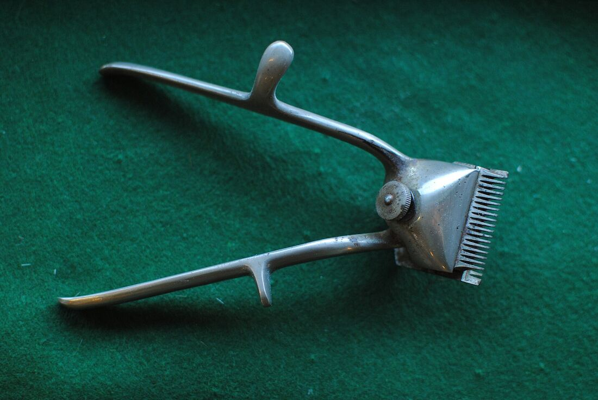
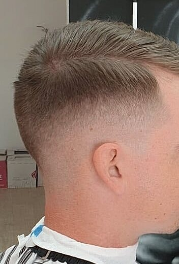
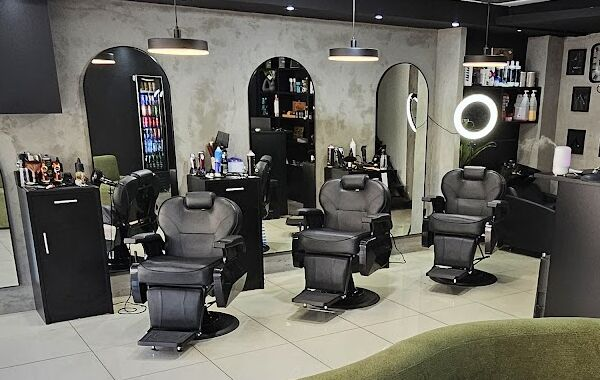
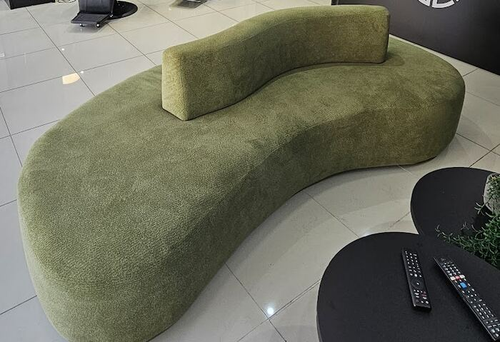
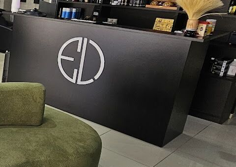
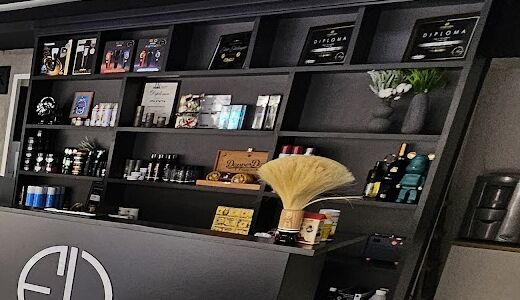
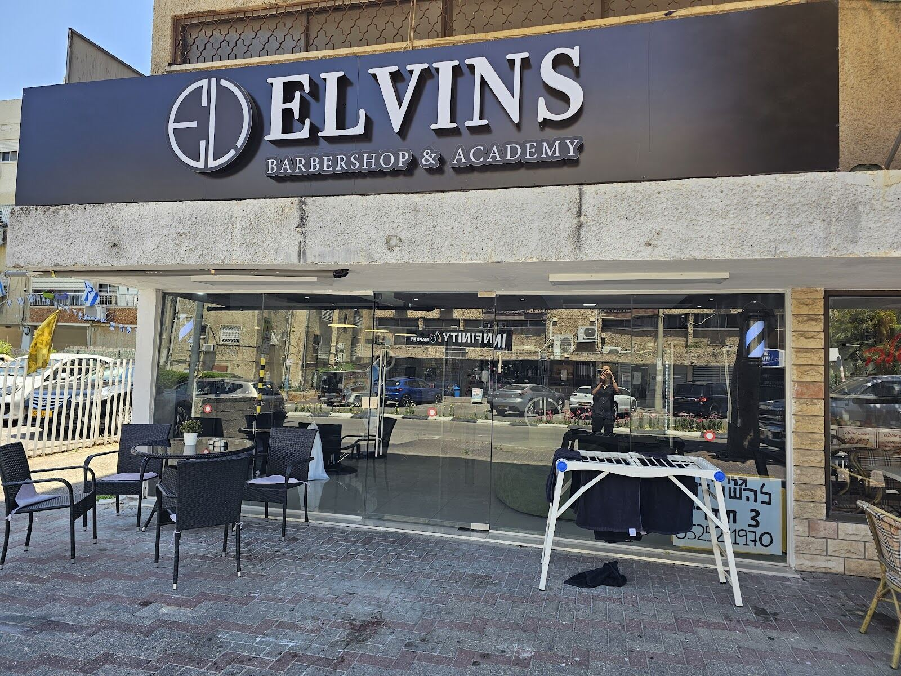
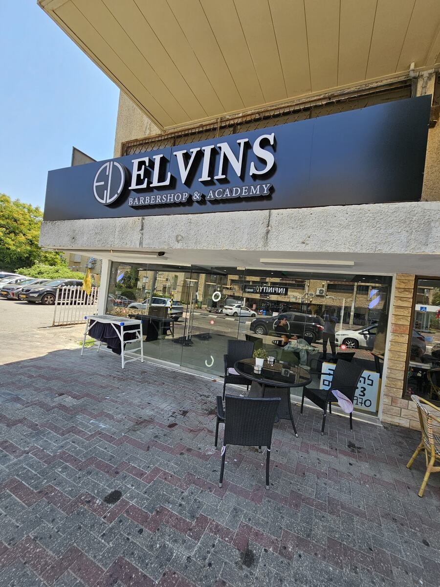
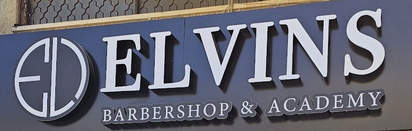

תספורת גבריםMen’s cuts
מהקלאסי ועד הפייד.From the classic to the fade.
קונספט לדוגמה שנבנה עבור Elvins barbershop מספרת גברים וילדים · זה אינו האתר הרשמי של העסקA sample concept built for Elvins barbershop · This is not the business’s official website
מספרת גברים וילדים, בקריית מוצקין.Men’s and kids’ barbershop, Kiryat Motzkin.
המספרה בקדיש לוז 8 · תמונת העסקThe shop at 8 Kadish Luz · the business’s photo

הכי קצר, ליד הצוואר ומסביב לאוזן.Shortest, at the neck and around the ear.
השכבות מתחברות בהדרגה.The layers join gradually.
למעלה נשאר מספיק שיער לעיצוב.The top keeps enough hair to style.
תספורות לגברים ולילדים, בקדיש לוז 8.Haircuts for men and kids, at 8 Kadish Luz.

מהקלאסי ועד הפייד.From the classic to the fade.

בכיסא של הגדולים.In the grown-ups’ chair.
א׳–ה׳ 9:00–20:00 · ו׳ 8:00–15:00Sun–Thu 9:00–20:00 · Fri 8:00–15:00

מחכים לתור בנחת.Wait your turn in comfort.

ה-EL מקבל אתכם.The EL greets you.

מוצרים לשיער, ליד הדלפק.Hair products, next to the desk.

עם פינת ישיבה בחוץ.With seating outside.
המספרה בקדיש לוז 8, בתמונות של העסק.The shop at 8 Kadish Luz, in the business’s own photos.


“מקום מושלם שלחתי את הבן שלי
המקום מזמין ונעים מקצוענים החזירו לי בן דוגמן”“A perfect place, I sent my son. The place is inviting and pleasant, real professionals, they gave me back a model son.”
“מספרה מצויינת, דניאל סיפר אותי פשוט אליפות! השקיע הזמן הנדרש וטיפל בכל שערה ובכל זוית על מנת להוציא אותי מסופר מושלם! תודה ויישר כוח!”“An excellent barbershop, Daniel cut my hair, simply superb! He took the time needed and cared for every hair and every angle to send me out perfectly cut! Thank you and well done!”
“אין על השירות שלכם אתם מקצוענים בטירוף בכל פעם חוויה אחרת, כל הכבוד לכם !!”“Nothing beats your service, you are incredibly professional, a different experience every time, well done!!”
כן, זו מספרה לגברים ולילדים.Yes, it’s a barbershop for men and kids.
בוואטסאפ או בטלפון: 052-521-1970.On WhatsApp or by phone: 052-521-1970.
ראשון עד חמישי 9:00–20:00, שישי 8:00–15:00. בשבת סגור.Sunday to Thursday 9:00–20:00, Friday 8:00–15:00. Closed on Saturday.
קדיש לוז 8, קריית מוצקין. מחפשים את השלט השחור ELVINS.8 Kadish Luz St, Kiryat Motzkin. Look for the black ELVINS sign.